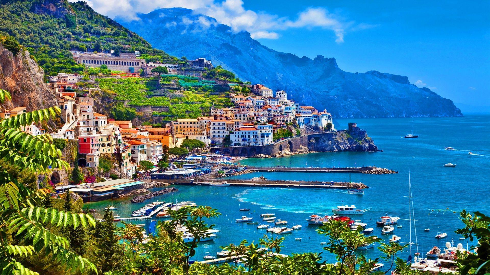

Italy Travel Highlights
One of the most breathtaking places in Italy is the Amalfi Coast. With colorful cliffs, deep blue water, and dramatic views, it feels unreal in person.
Italy is also known for its incredible diversity. In the north, you’ll find snow-covered mountains and modern cities, while the south offers warm beaches, historic towns, and a slower lifestyle. This contrast makes Italy feel like multiple worlds in one country, each worth exploring on its own.
The picture below shows an example of Italy's breathtaking scenery, the Amalfi Coast, located in the heart of Naples.

Cities Worth Visiting
Rome, Florence, Venice, and Milan each offer a completely different experience, from ancient ruins to modern fashion.
Italy is not just a destination — it is an experience that stays with you.
Why Italy Stands Out
- I. Diverse cities
- II. Strong culture
- III. Amazing food
- IV. Stunning landscapes
Made by: Karim Mahiddine - 1AS2